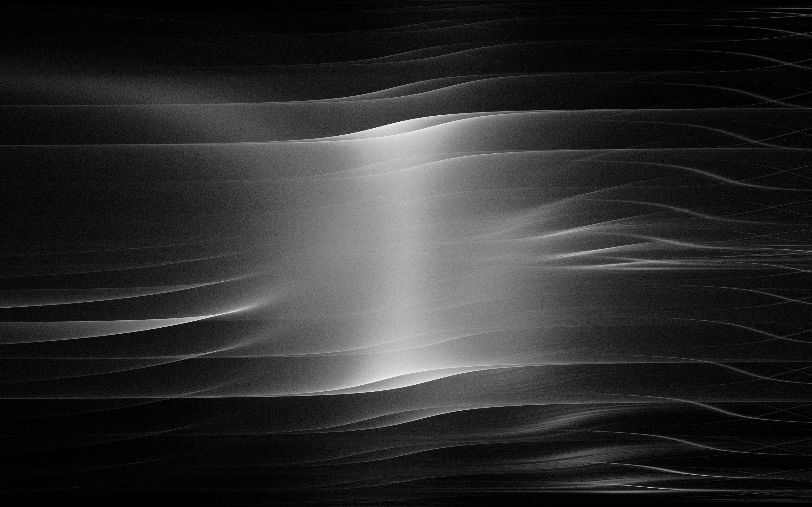

Dunes
A series of images generated by a dynamical system.
Summer 2016
This project is based on Fluctuating Repetition, a blog post by the Dutch data scientist Vincent D. Warmerdam. The images below are generated by this dynamical system:
xn+1=sin(a×xn)+tan(b×xn)−tanznyn+1=sin(c×xn)+sin(d×zn)zn+1=zn+0.1
I set the value of x0,y0,z0 to 0, but setting them to different values gives practically identical results (for the purposes of this project). The system is then iterated several million times, and a white dot with a very low opacity is drawn on each iteration.
Different images are obtained when the constants a,b,c,d are changed. Below are four sets of values for these constants, followed by the image that each set generates.
a=−0.1,b=1,c=0.1,d=1
a=−0.1,b=−1,c=0.1,d=3

a=−0.6,b=1,c=0.1,d=1
a=−0.3,b=1,c=0.12,d=3
Here is the complete code for the project, written in JavaScript with the p5.js library:
var duneOne = {
a: -0.1,
b: 1,
c: 0.1,
d: 1
};
var duneTwo = {
a: -0.1,
b: -1,
c: 0.1,
d: 3
};
var duneThree = {
a: -0.6,
b: 1,
c: 0.1,
d: 1
};
var duneFour = {
a: -0.3,
b: 1,
c: 0.12,
d: 3
};
var vals = duneFour;
var vec = new p5.Vector(0, 0, 0);
function setup() {
createCanvas(windowWidth, windowHeight);
background(0);
fill(255, 5);
noStroke();
}
function draw() {
translate(width / 2, height / 2);
for (var i = 0; i < 1500; i++) {
vec = iterative(vec.x, vec.y, vec.z);
ellipse(vec.x * 70, vec.y * 200, 0.5, 0.5);
}
}
function iterative(x, y, z) {
var newX = sin(vals.a * x) + tan(vals.b * x) - tan(z);
var newY = sin(vals.c * x) + sin(vals.d * z);
var newZ = z + 0.1;
return createVector(newX, newY, newZ);
}